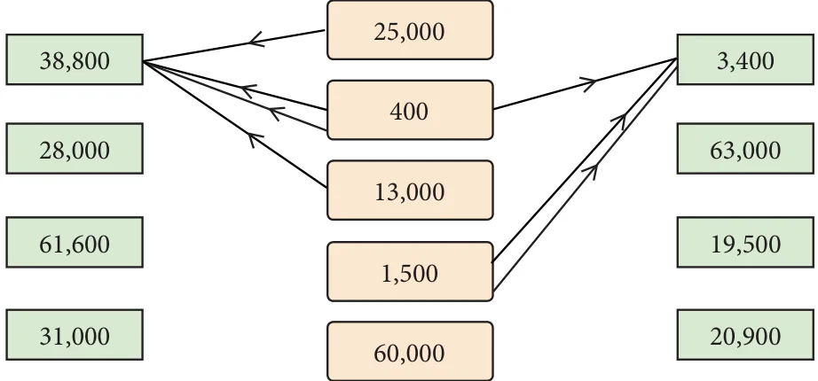
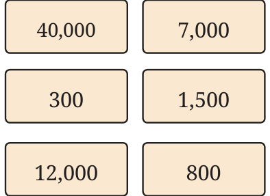

Observe the figure below. What can you say about the numbers and the lines drawn?

Numbers in the middle column are added in different ways to get the numbers on the sides \((1500 + 1500 + 400 = 3400)\). The numbers in the middle can be used as many times as needed to get the desired sum. Draw arrows from the middle to the numbers on the sides to obtain the desired sums. Two examples are given. It is simpler to do it mentally!
\(38,800 = 25,000 + 400 \times 2 + 13,000 3400 = 1500 + 1500 + 400\)
Can we make 1,000 using the numbers in the middle? Why not? What about 14,000, 15,000 and 16,000? Yes, it is possible. Explore how. What thousands cannot be made?
Adding and Subtracting
Here, using the numbers in the boxes, we are allowed to use both addition and subtraction to get the required number. An example is shown.

\(39,800 = 40,000 - 800 + 300 + 300 45,000 =\)
\(5,900 =\)
\(17,500 =\)
\(21,400 =\)
Digits and Operations
An example of adding two 5-digit numbers to get another 5-digit
number is \(12,350 + 24,545 = 36,895\).
An example of subtracting two 5-digit numbers to get another 5-digit number is \(48,952 - 24,547 = 24,405\).